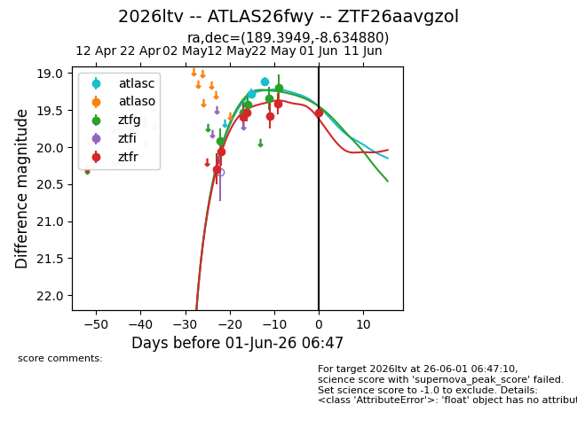
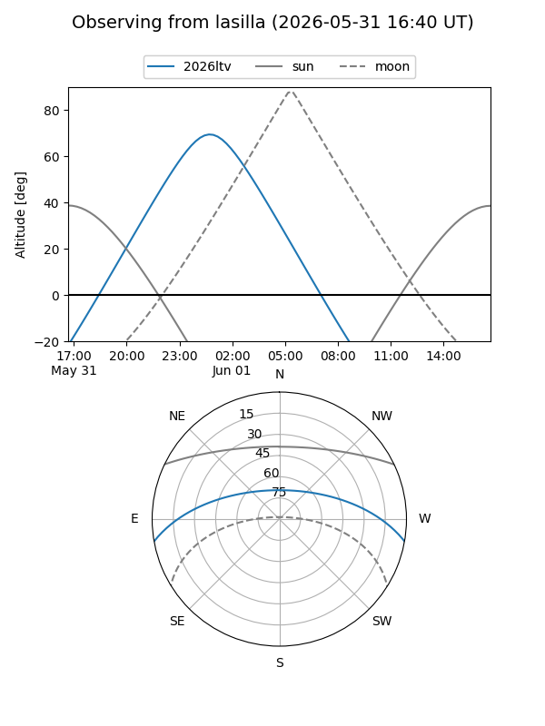
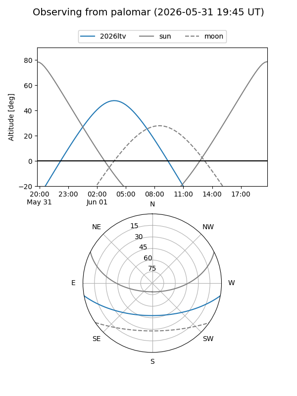
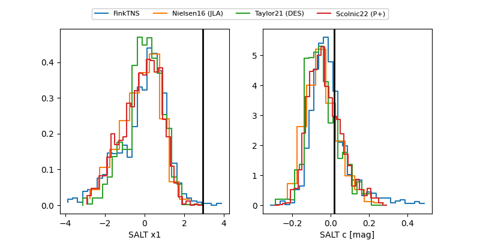

2026ltv
Target 2026ltv at 2026-06-01 06:48
Aliases and brokers:
lsst-FINK: link
lsst-Lasair: link
lsst-ALeRCE: link
ztf-FINK: link
ztf-Lasair: link
ztf-ALeRCE: link
TNS: link
YSE: link
alt names
ZTF26aavgzol (ztf,fink_ztf)
2026ltv (tns,yse)
ATLAS26fwy (atlas)
Coordinates:
equatorial (ra, dec) = 189.3949,-8.63488
equatorial (HMS+DMS) = 12:37:34.78,-08:38:05.57
galactic (l, b) = (297.0868,+54.07951)
Flags:
TNS confirmed: nan
Photometry:
last atlasc=19.11, ztfg=19.20, ztfr=19.53
2 atlasc, 5 ztfg, 7 ztfr detections
Lightcurve

Visibility


Additional plots
